前些日子找出上學期完成一半的密室逃脫，花了幾天把它完成。它是半小時內就能破關的小遊戲，可以前往我的 github page來玩。
以下會有劇情暴雷，請斟酌閱讀
Ink 簡介
在開始之前，可以到該專案的 github 頁面來查看我的 code。
Ink是一個 scripting language，它能使用簡單的語法來編寫以文字為基礎的遊戲。
它可以快速產生 html 和 js 檔案，讓你不需要碰到一絲一毫的 js 就能產生一個簡單的網頁。
想要編寫 Ink 的話可以用他們的 IDE: Inky 來編寫，在 Inky 中，可以即時看到編寫的結果，非常好用。
Ink 基本語法
Ink 的語法真的非常簡單，給我的感覺有點像 markdown，用一些符號來替代程式碼。
以下幾個功能可以構成一個小故事：
- 普通見到的文字只要直接打出來就好，不需要加上任何的 tag 或符號。
- 或是在句尾加上
<>來黏著兩行句子
- 或是在句尾加上
- 在遊戲中最常見到的選項分為兩種：
- 只能選擇一次的單次選擇，使用
*來表示 - 可以重複選擇的多次選擇，使用
+來表示
- 只能選擇一次的單次選擇，使用
- 像其他語言的 function 的結構：結（knot），用
=== 結的名稱 ===表示。它可以用來命名一個場景或一段劇情，好讓程式從不同的地方進入該場景，或是重複進入。- 要跳轉到結的話，就要使用
-> 結的名稱。
- 要跳轉到結的話，就要使用
請注意，每個選項與結之後都必須要有跳轉。
簡單 Demo 1
我們能利用這樣簡單的語法來寫出一個小故事：
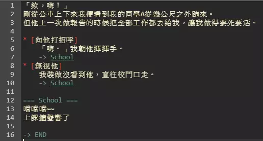 使用 文字敘述 -> 單次選項 -> 跳轉至結 來構成。
產生的結果是這樣：
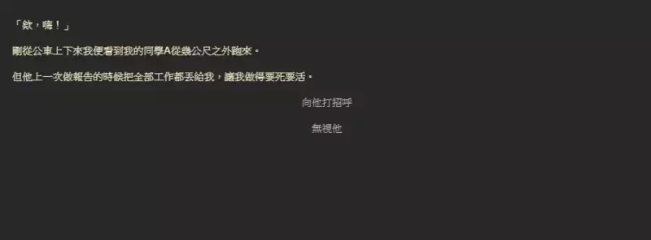 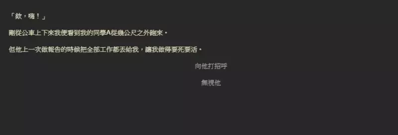
先由一段文字當開頭，在選擇選項後利用 -> School 來跳轉到名為 School 的結。
在 School 的最後寫上 -> END 來告訴程式你結束了。
簡單 Demo 2
由於我們沒有重複回到這個場景，所以看不到單次選項的功力。
這裡我寫了一個簡單的重複場景，其中每個選項都是單次選擇。
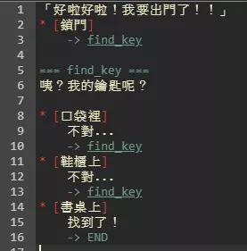 每個選項都只能被選擇一次的寫法 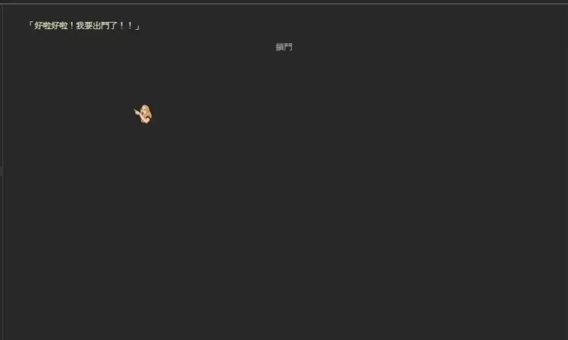 選過的選項會消失，以推動劇情的進行
- 另外，我們也能使用複數個
+和*來構成選完選項後出現的第二個分支選項。
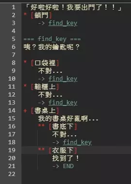 
在這裡，每一個選項都以 * 開頭，使得每次回到 === find_key === 時，不會出現已選過的選項。
選項有三種寫法，一是
* [打招呼] 嗨~、二是* 嗨[]~、三是* 嗨~，可以用這個方式來控制按下選項後是否要複誦選項的內容，還有要複誦到哪裡，這裡可以自己嘗試看看～
Ink 進階語法
這裡不提太複雜的東西（畢竟我也不會），就最簡單的判斷式和可變文本來當示範。
判斷式
判斷式，也就是 if，在這裡必須使用大括號 {} 括住條件。
我最常用的是「是否經過某個結」的功能。
它會像是這樣：
1
* {結的名稱} [選項]
或是：
1
2
3
{結的名稱:
要說的話或是要跳轉
}
這裡有個小範例，在 === box === 中寫了上述的第一種用法，而 === key === 中寫了第二種用法。
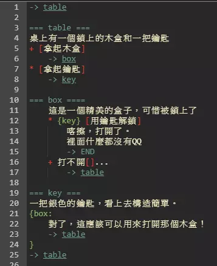 box 中寫了有條件的選項，key 中寫了有條件的一般文字 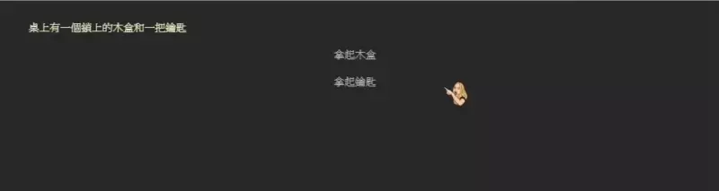 若沒有先拿木盒再拿鑰匙 -> 不出現可以打開木盒的文字 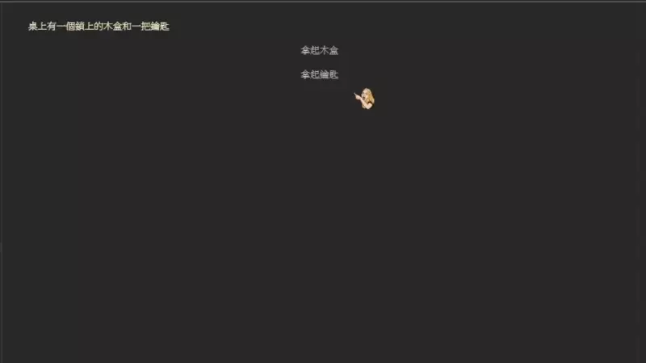 若曾去過名為 key 的結 -> 出現「用鑰匙解鎖的選項」
可變文本 (variable text)
大括號 {} 還能用來做簡單的次數計算和隨機結果，他們的寫法分別為：
- 照順序跑：用大括號
{}括起來，並用直線符號|隔開，這樣每一次執行到這一行時，就會依照執行過的次數做出相應反應。它寫起來像這樣：1
{1|2|3|4} - 隨機結果：用
{~開頭，並用直線符號|隔開每一個選項，再用大括號}結束，，寫起來是這樣：1
{~ 1|2|3|4}
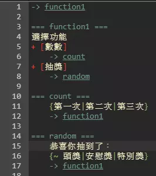 分別用兩個結寫照順序功能和隨機功能 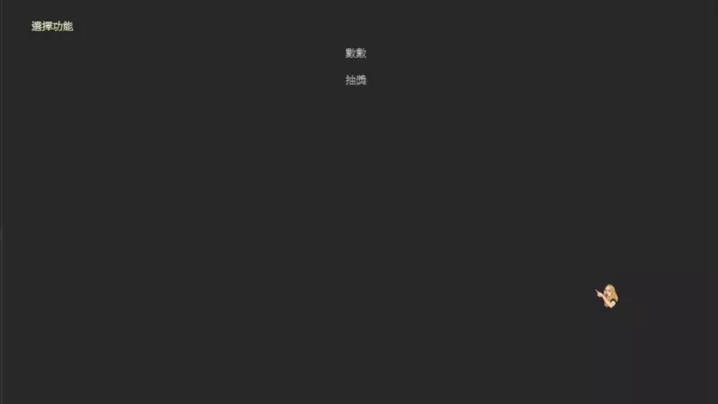 每次點擊時，都會跑下一個被 | 隔開的內容 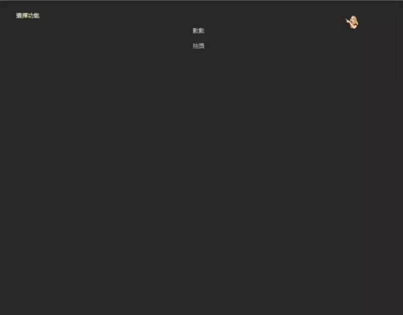 每次點擊時，隨機出現一個被 | 隔開的內容
結語
這篇文真的拖了超～～級久的，從密室逃脫完工就開始寫文章，到現在也過了兩個月，時間真的過超快的。
這次 blog 的 push 會新增留言功能，希望能夠順利成功不用 debug，拜託拜託（放綠色乖乖